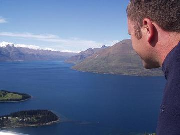

We were having a drink in a backpackers hostel in downtown Auckland a few days after we arrived. This band came on and they started playing some fast rock and roll numbers. Helen and I jumped, and we were practicing some jiving on the dance floor. Out of the corner of my eye, I noticed that everyone else had left the dancefloor, and a large crowd was watching us and cheering. A drop got a whoop, and the first-move lindy hop got a clap going! The band wouldn't stop, and moved from one number to another until they finally gave us a break after about six songs! We had to bow to cheering and clapping as we left the floor. The owner came up to us and offered us free private accomodation for drawing such a crowd! So, Ceroc does pay!
We've tried a few classes over here, the style is different, it's very 'flowy' and not so much like jiving. We've learned some more lindy hop though, and are looking forward to trying it in Australia-where they're into more throws and 'grabbing air'.
The centrepiece of this city is the 'Sky tower'. Naturally, the most popular thing to do is a type of base jumping off it, and it's a regular sight to see some figure whizzing down in the background of rush hour.
We bought a van in the Backpacker's car market in Auckland and christened him 'Jean-Claude Dam Van'. He's kitted out with a bed and cooker and is ready to go. Cape Reinga is at the far northern tip of the north island and is actually the place where the Pacific meets the Tasman sea. From here you can see the waves of the two oceans coming towards and crashing into each other right out to the horizon.
Just down from Cape Reinga the highway turns into a beach, known as as 90 mile beach (although it's really only about 90km). It's possible to drive along the beach, but only when the tide's out, and the salt water screws up your car. It's your choice if you want to drive it, but cars regularly get stranded there and left by their hapless owners. There's a specially coated aluminium bus that you can take as a tour, or, like us, you can hire quad bikes to tear along and take excursions into the sand dunes. This was a fantastic tour with only the two of us and a guide, he took us through deep puddles where we thought we'd lose the bikes, and up the steepest sand dunes where we felt like tipping over. I was amazed at the extreme terrain that the bikes could handle.
This peninsular is a little hippy haven, with pockets of artists and craft shops abound. One of the best things I've ever visited must be the 'Water Works'. This is a collection of crazy interactive inventions built in a huge, lovely garden - most of which work using water. We entered, paying in the honesty box, and had the run of the place. Crazy bikes that you pedal to spray water at each other, fast flying foxes, a water-powered pendulum clock, a human hamster wheel, a bike roundabout that takes you high (ET style) into the air, a huge musical box powered by a waterwheel, and lots of other random types of inventions.
Okay, so what's 'Zorbing'? It's rolling down a hill in a huge transparent ball. You can fit two people in it, add a bucket of water, and get pushed down. It's a laugh as you roll over each other, getting wet and disorientated, and generally forgetting where you are, before emerging at the bottom in a strange re-birth type way!
It's also the place to go Luge-ing. Now readers have written in asking what this is all about, and all will be explained. You take a gondola to the top of the local mountain, then it's a downhill run on tarmac where you race (semi) controllable carts at speed. We loved this, and there were choices of three routes: scenic, intermediate, and downright scary. We had five races, taking a ski-type chairlift back to the top each time. I'd like to add that I won every race (H)!
Rotorua is also famous for it's hotpools. The town has steam popping out all over the show, it escapes out of vents in the street and in the park, giving the place a romantic sulphur smell (just like dog food!). There are fantastic bubbling pools, geysers to visit and hot springs to bathe in.
This is skydive city! It also has a free campsite! Now that is forward thinking. We booked to go skydiving, and the fear hit us instantly. We walked around the town trembling and contemplating how stomachs feel when jumping out of a plane and looking at the ground from 12000ft. The waiting was agony, as we had to wait for the clouds to clear, then call the airport, and rush over there to jump. They also advertise a 15000ft jump where you get over a minute freefall and need an oxygen mask-but we thought we'd start off low. I developed a new mantra-'If my mate Ian Dalton can do it, so can I'. Anyway, the clouds didn't clear, and after a few days waiting, we had to (thankfully) leave without the experience - phew, that was close!
Travelling is different to a long holiday, it's not as relaxing for a start - you have to keep moving, fit in dinner (and worry about mal-nutrition), find somewhere to stay each night, and wonder where you're going tomorrow - nah, it's not a bad life really! You realise how long you've been away when you have to have haircuts, trim your toenails and buy a new toothbrush. Having a birthday away is strange as you don't get many cards and can't carry any presents, and you could be, well, anywhere. So the best thing to do on your birthday is to do something cool, and we were in Waitomo for Helen's birthday, which means one thing: black water rafting! This involves getting yourself into a wet suit and immersing yourself in icy water in the depths of a cave - what a treat! We spent four hours caving, and this included jumping on to a inflated inner tube, turning off our head torches and relaxing back in the dark to watch the constellations of glow-worms above our heads. We got mucky, cold and wet, it was great!
Yes, it's true, New Zealand is building a new Stonehenge. It's a little more updated in that it's made of breeze-blocks and uses proper Kiwi builders scratching their heads (and other places). We went to look at it in Masterton although it's not yet open to the public. We were lucky enough to bump into the English lady whose astronomer husband is in charge of the operation. It's an astronomical experiment (nothing to do with ley-lines then), and stands gleaming white amongst the green landscape.
We travelled south to Wellington, where we waited for the ferry to take us to the magic of the South Island; We arrived in Picton, but set off straight away to Nelson. If you want to know what really happened to that damn ring the Bagginses was wearing, it's in a jewellery shop in Nelson. Just to ruin the image a bit, they had to make about forty of them to fit different cast members and you can buy your own here. Nelson is a cool place, with veggie cafés, kite shops and new age shops. From here we went to the Abel Tasman national park. We stopped in Takaka, another hippy place (the local pizza place is dedicated to Frank Zappa). It's also home to the purest springs in the world, but strangely they are called 'Pu pu' Springs (it must mean something else in Maori!). The water is like crystal clear glass.
We spent a day walking in the Abel Tasman park by taking a water taxi for a few kilometres upstream and following a return track. What struck us was that although the track is very popular, we hardly saw another soul. Perhaps it was something to do with the incessant rain?
We set off driving the next day, a beautiful sunny day...
...passed an airfield in a small town called Motueka, enquired about sky-diving, and half and hour later we were climbing to 13000ft! I'm glad I didn't have to sleep on the decision. Great
experience though, feet dangling out of a plane, clouds BELOW you, pose
for a picture, then ooof, your stomach lifts as you fall out spinning
backwards and see the plane disappearing rapidly above you only a
second after you jumped out. Then you start to enjoy freefalling at 120MPH, it's
windy and you can spin by moving your hands around, and enjoy the view.
50 seconds of freefall, then the parachute opens to jerk you back to
30MPH. 5 minutes later, you're steering over rooftops and landing
softly. I may do it again but I'd still be a bit scared. I was buzzing
for the rest of the night. Just look at the photos below: now, would you trust these dorky looking guys to strap themselves to you, then hurl yourself out of an aeroplane (that's why we were so scared!!!!)?
Hokitika is famous for its Jade carving. There is a hostel run by an enthusiastic guy who loves to carve jade and runs a workshop where you can design and carve your own jade pendant. We went along in the morning, and Sam left me to it as I set about scribbling some designs on paper. Five hours, and ten sore fingers later, I had completed the carving, which I gave to Sam as an exceedingly late birthday present.
When we set off from Hokitika, it was one of those days when you feel a bit 'lost'. We were switched off and we ended up driving without knowing where we were going. We were already giving a lift to a girl from Switzerland named Sarah, a fellow jade carver from the Hokitika hostel, and the three of us where sitting up front in the van. Our 'goal' came in the form of another hitchhiker we picked up - an American named Brandon. We suddenly had a mission to deliver our new friends to their destination in the now torrential rain and ended up in a hostel at Franz Joseph Glacier. The hostel included a spa pool amongst other things, so we treated ourselves to a night there.
The next day we took a full-day walking tour on the glacier. We had ice-axes and all the waterproof clothes. This was a beautiful experience, walking on ice of the deepest, most incredibly pure blue. Squeezing through deep, tight ice cracks was only possible due to the slippery wetness of pressing against the frozen walls, and walking across deep crevasses (with a horizontal ladder as a makeshift bridge) by not looking down. We climbed through ice caves, and our guide even had to change and create a new route during our five hour expedition.
The next day we (including our hitchhiker Brandon) moved on to a new town. Wanaka-has some great things going for it. It is a town surrounded by a beautiful lake, has snowboarding in the nearby mountains (called the 'Remarkables'), 'puzzling world', and a groovy cinema. 'Puzzling world' is a crazy, fun place with a massive maze, puzzles everywhere, and lots of optical illusions. The groovy cinema sells great beer and cookies and is full of old sofas. It even has an old Morris Minor to sit in and watch the movie - we watched 'The Eternal Sunshine of the Spotless Mind' (New Zealand's films are a bit behind).
We parted company with Brandon and Karen and Anna (two Swedish girls we met), and headed to Alexandra. This town is the start of New Zealand's first disused railway track, now turned into a cycle path. We hired some bikes although the track, being new, was fairly rough in places, so after twenty five kilometres we were ready to stop for the evening. We pulled into a backpackers in Oturehua which was run by a friendly and busy lady. She had a 'do-it-yourself spa': a bathtub outside (hidden behind a bamboo fence), which you light a fire underneath. We spent a lovely evening sitting in this bathtub with a fire raging underneath, whilst we watched the stars.
Anyway, I know you want to hear about this amazing happening… We had returned to Alexandra and had just eaten a pizza in the early evening and left to walk back to the van. Outside we heard rain but the street was completely dry. We looked across the carpark and saw a torrential downpour, it was raining on one side of the street!. I ran over to the rain, got wet, ran back ten metres to where Helen was standing – dry! I repeated this several times in total amazement. It was an incredible wall of rain soaking one side of the street, and this lasted for around five minutes before the rain finally got tired of playing with us, moved, overtook us, and drenched us completely.
The journey to Milford Sound took us through the mountains - literally. The road passed signs which warned 'no stopping due to avalanche danger', and passed through a long dark tunnel which went right through a mountain. It was well worth it though, driving through the incessant rain. There were so many breathtaking waterfalls gushing into the sound. We took a cruise through this wonderland, ending it by visiting an underwater observatory where we could see the coral living in this area. The strange thing is that the area has so much rainfall that there is a division between the fresh water and the saltwater. Going down into the observatory, you can see the dividing line. This freshwater layer helps host the most beautifully strange creatures. The enthusiasts who built these coral gardens planted them ten years before the project was accepted, and they raise and lower them depending on the weather.

We drove south from Milford along the Southern Scenic route, a beautiful road that winds around the south coast. The hills are perfectly formed, covered with the most incredible green grass – just like Tellytubby land! We passed through Invercargill at speed – not worth stopping at. We visited the southernmost point on the south island, and found a beach called Weir's Beach.
As we were driving we began to experience some problems starting the van, so we were paranoid about stopping anywhere that was not on a hill. However, we could not resist stopping at the Lost Gypsy Gallery – housed in an old British Leyland van. The owner (Blair) made mechanical gadgets and arty pieces, and is one of the nicest people in NZ. We explained that our van wouldn't start, so he lent us tools and driveway and another starter motor. Sam spent ages trying to fix it with no success, so Blair helped us push off down the road to get us going again. Another example of Kiwi friendliness!
We pushed on towards Dunedin in the hope of finding help for our stricken vehicle. Dunedin - taken from the Gallic name for 'Edinburgh' - lived up to its name. It is very Scottish and very beautiful. It is a University town where cool coffee shops abound. We stayed a few days, soaking up the atmosphere, and not really doing anything!
From here we went to Mount Cook, the biggest mountain in NZ, part of the range that divides the East and West of New Zealand. I had planned for us to visit Mt Cook without really knowing what we would do when we got there, but it turned out to one of the best places we visited. Surrounded by high, snow covered peaks and glaciers, we felt humbled. As we watched the sun turn the snow pink and peach at sunset, the sound of rumbling avalanches filled the air. We went for a walk the following day, crossing rivers of glacial run-off, traversing suspension bridges and finishing at the face of a glacier.
After leaving Mt Cook, we passed through the small town of Lake Tekapo, which hosts the University of Canterbury's observatory. If you ask nicely, you can look through their huge, robot operated telescope. We were lucky enough to see deep space galaxies from a remote part of the world with clear air and no light pollution.
As we travelled, we also personalised Jean Claude Dam Van, with a spot of spray paint.
Christchurch is a very English city. It is famous for having its own resident wizard who appears everyday outside the cathedral, to expound his theory on why the world map should be the other way up, and why the earth is really inside out! The city has a lovely cathedral, punting on the river, a café culture and a nice University.